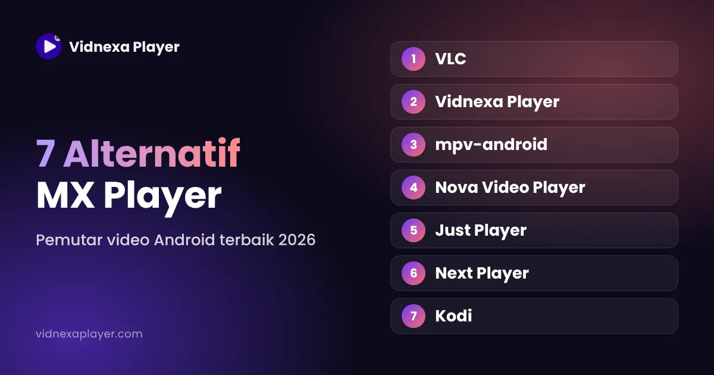

7 Alternatif MX Player untuk Android di 2026
▶ Unduh Vidnexa di Google Play
MX Player sudah lama jadi favorit, tapi versi gratisnya menampilkan iklan dan beberapa fitur ada di versi berbayar. Jika Anda mencari yang berbeda, ini alternatif yang layak dicoba.

1. VLC: serba bisa
Gratis dan open-source. VLC memutar hampir semua format dan menangani streaming jaringan dengan baik. Tampilannya fungsional. Cocok untuk: yang ingin satu pemutar andal.
2. Vidnexa Player: video plus alat media sehari-hari
Memutar 200+ format termasuk MKV dan HEVC, dengan subtitle (SRT, SSA, ASS, VTT), pilihan trek audio, preset gambar HDR+ dan Google Cast. Player Controls-nya punya tombol HW decoder, sinkronisasi audio dan subtitle, A-B repeat, sleep timer, PIP, bookmark dan Clip / GIF. Ditambah pemutar musik dengan equalizer, alat galeri, Penyimpan Status WhatsApp dan kontrol suara. Gratis diunduh dan didukung iklan. Cocok untuk: yang lebih suka satu aplikasi daripada banyak.

3. mpv-android: untuk penggemar
Versi Android open-source dari pemutar mpv, dikenal karena kualitas render tinggi dan pengaturan mendalam. Minimalis dan butuh sedikit pengaturan. Cocok untuk: yang suka mengatur detail pemutaran.
4. Nova Video Player: fokus perpustakaan
Pemutar open-source yang menata film dan serial dengan poster dan informasi, serta bisa memutar dari folder jaringan. Cocok untuk: membangun perpustakaan lokal yang rapi.
5. Just Player: sederhana dan open-source
Pemutar ringan dan open-source berbasis ExoPlayer Android, dengan tampilan bersih. Cocok untuk: pemutar sederhana.
6. Next Player: modern dan ringan
Pemutar open-source dengan desain Material modern, gestur dan dukungan subtitle. Cocok untuk: pemutar harian yang bersih dan simpel.
7. Kodi: pusat media
Pusat media open-source lengkap untuk perpustakaan besar, add-on dan TV box. Lebih dari yang dibutuhkan kebanyakan orang di ponsel, tapi sangat berguna jika punya server rumah. Cocok untuk: perpustakaan besar dan Android TV box.
Cara memilih
- Gratis dan open-source: VLC, mpv, Nova, Just Player atau Next Player.
- Banyak fitur dalam satu aplikasi: Vidnexa Player.
- Perpustakaan besar atau TV box: Kodi atau Nova.
Pertanyaan yang sering diajukan
Apa alternatif gratis terbaik untuk MX Player?
VLC adalah alternatif gratis dan open-source paling populer. Jika juga ingin musik, galeri dan Penyimpan Status dalam satu aplikasi, Vidnexa Player bisa jadi pilihan.
Alternatif MX Player mana yang gratis dan open-source?
VLC, mpv-android, Nova Video Player, Just Player dan Next Player semuanya pemutar open-source gratis. Kebijakan iklan dan pembelian dalam aplikasi bisa berubah, jadi cek halaman Google Play tiap aplikasi untuk info terbaru.
Apakah Vidnexa Player gratis?
Ya. Vidnexa Player gratis diunduh dan didukung iklan, tanpa perlu mendaftar.
Apakah pemutar ini bisa memutar MKV?
Ya. Semua pemutar di daftar ini bisa memutar MKV, meski dukungan subtitle dan codec audio berbeda-beda.
Unduh Vidnexa Player Gratis
Video 4K/8K dengan mode gambar HDR+, musik, file & foto — satu aplikasi gratis diunduh, tanpa daftar akun.
▶ Unduh di Google Play